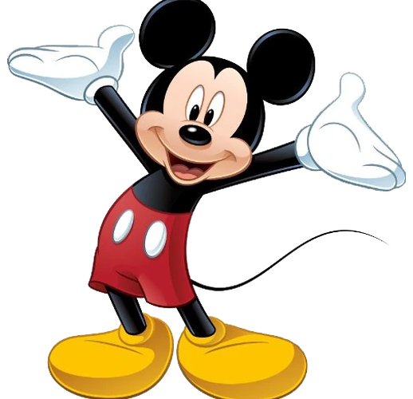

1Пригоди миші
Міккі Маус
Міккі любить пригоди, але характер його спокійний і добрий. Сьогодні ми впізнаємо Міккі Мауса в його культових червоних шортах, жовтих туфлях і білих рукавичках. Він оптимістичний, сміливий і милий (The Walt Disney Family Museum).
Більше інформації
2Історія іншого світа
Коко
Музикант-початківець Мігель, зіткнувшись із забороною предків на музику, потрапляє в Країну Мертвих, щоб знайти свого прапрадіда, легендарного співака (опис IMDb).
Більше інформації

3Єдиність землі та моря
Ваяна
У Стародавній Полінезії, коли жахливе прокляття, накладене на себе напівбогом Мауї, досягає острова Ваяни, вона відповідає на заклик Океану шукати напівбога, щоб налагодити ситуацію (опис IMDb).
Більше інформації